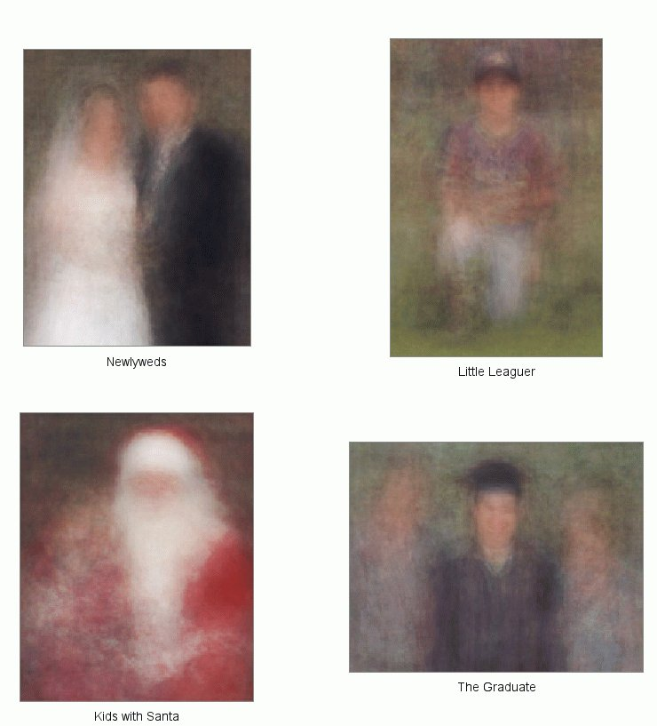
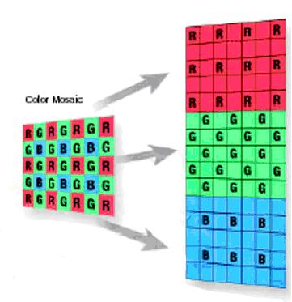

General HW Submission Instructions
Please follow the following submission instructions.
I reserve the right to simply refuse to grade any submissions that don't adhere to this format :-)
- All homework must be submitted electronically to the EEE system.
- Please submit two files for each homework, a pdf containing answers to any
written questions and descriptions of your results and a zip file containing a single
directory firstname_lastname which contains your code.
- PLEASE DO NOT SUBMIT .doc, .docx or other document file formats.
- Homework must be submitted before midnight (11:59pm) to the given folder in the EEE assignment dropbox.
- No late homeworks will be accepted, so please turn it whatever
you have. However, if you submit your homework 24 hours early, you will
automatically receive extra credit.
- You will be graded on clarity of your results; make sure any images
are displayed with reasonable resolution and color axes and answers are
clear and concise.
Please read the additional guidelines on homework submission here
HW1
Due: 1/20 11:59pm EEE Dropbox
MATLAB Warmup [20 points]
One goal of this problem set is to become familiar with basic
MATLAB commands, practice manipulating vectors and matrices, and try
out basic image display and plotting functions. If you are unsure what
a MATLAB function does, check the reference manual (at the command
line, type "help" and then the command name).
- You can acquire a student version of MATLAB here [UCI Student Version]
- If you haven't used MATLAB before, you may find these video tutorials useful. I recommend working
through this concise MATLAB tutorial. Open an interactive session
in MATLAB and test the commands in the tutorial by typing them at the
prompt. Pay particular attention to the ways in which you can
access subindices of arrays, this gets used over and over again in MATLAB.
- Describe (in words where appropriate) the result of each of the
following MATLAB commands. Use the help command as needed, but try to
determine the output without entering the commands into MATLAB. Submit
your description of the commands (not a screen-shot!)
- >> a = [5:15];
>> b = a([1:3:end]);
- >> f = [1501:2000];
>> g = find(f > 1850);
>> h = f(g);
- >> x = 22.*ones(1,10);
>> y = sum(x);
- >> a = [1:100];
>> b = a([end:-1:1]);
- Write a script which does the following. First, use "imread" to load
in a grayscale image of your choice. If you prefer, you can load in
a color image and then convert it to grayscale using the rgb2gray
function. By default, MATLAB loads images a integer datatypes. For this
class we will always be performing numerical operations on the pixel values
so it is best to convert them to a floating point representation. Use
the im2double to convert your loaded image from an uint8 to a
double datatype. All together this looks like:
I = imread('myfile.jpg'); %grayscale
-or-
I = rgb2gray(imread('myfile.jpg')); %if the image is color
I = im2double(I); %covert to double.
Now create an array A that contains the pixels in a 100x100 sub-region of your image.
Write code to perform the following operations on this sub-image. Each of these
can be written as just a couple lines of code without using any for-loops.
- Sort all the intensities in A, put the result in a single 10,000-dimensional vector x. Plot this sorted vector in a figure.
- Display a figure showing a histogram of A's intensities with 32 bins using the hist function.
- Create and display a new binary image the same size as A, which is white
wherever the intensity in A is greater than a threshold t, and black everywhere
else. Choose a value for the threshold which makes the image roughly half-white and
half-black.
- Generate a new image (matrix), which is the same as A, but with A's mean
intensity value subtracted from each pixel. After subtracting the mean, set any negative values to 0
and display the result.
- Let y be the vector: y = [1:6]. Use the reshape command to form a new matrix z
whose first column is [1, 2, 3]', and whose second column is [4, 5, 6]'.
- Use the min and find functions to set a variable x to the minimum value that occurs
in A, and set r to the row it occurs in and c to the column that this value occurs in.
If there is more than one minima then return the first one.
- Let v be the vector: v = [1 8 8 2 1 3 9 8]. Using the unique function,
compute the total number of unique values that occur in v.
Programming: average images [40 points]
- Write a program that will load a a collection of images, compute the pixelwise average of the images,
and display the results.
The images below give some examples that were generated by averaging "100 unique
commemorative photographs culled from the internet" by Jason Salavon. Your program will do something similar.

Download the images provided on the course website for this assignment
averageimage_data.zip. There are two
sets, set1 and set2. Notice that they are all the same size within a single
set.
Write a MATLAB script to load in one of the sets of images. You can use
the dir command to get the list of files in the directory. As you
load in the images, you should compute an average image. Color images are
represented by a 3-dimensional array of size (HxWx3) where the third
dimension indexes the red, green and blue channels. You will want to
compute a running average of the red, green and blue slices and then
recombine the results to get your final average color image.
Run your code on both sets of images, separately. Include in your
write-up the resulting images and briefly explain why the results look the
way they do.
This code fragment can be used to loop through all the image files
in one directory (here assuming your images are in a sub-directory named
images, with .jpg extension):
filelist = dir('images/*.jpg');
for i=1:length(filelist)
imname = ['images/' filelist(i).name];
nextim = imread(imname);
% convert nextim to double and add it to your running average
. . .
end
Programming: color sensor demosaicing [40 points]
-
As discussed in class, there are several steps to transform raw sensor
measurements into nice looking images. These steps include Demosaicing,
White Balancing and Gamma Correction. In this problem we will implement
the demosaicing step. (see Szeliski Chapter 2.3)
The following zip file contains raw images from a Canon 20D camera as well
as corresponding JPEG images from the camera (*.JPG). The raw
image files (*.CR2) have been converted to 16-bit PGM images
(*.pgm) using
David Coffin's dcraw program. These PGM images can be read
into MATLAB using the imread command.
Download the data here: demosaic_data.zip

Bayer RGGB mosaic.
The raw image has just one value per pixel. The sensor is covered with
a filter array that modifies the sensitivity curve of each pixel. There
are three types of filters: "red", "green", and "blue", arranged in the
following pattern repeated from the top left corner:
R G . . .
G B
.
.
.
Your job is to compute the missing color values at each pixel to produce a
full RGB image (3 values at each pixel location). For example, for each
"green" pixel, you need to compute "blue" and "red" values. Do this by
interpolating values from adjacent pixels using the linear interpolation
scheme we described in class.
function [J] = mydemosaic(I)
%mydemosaic - demosaic a Bayer RG/GB image to an RGB image
%
% I: RG/GB mosaic image of size HxW
% J: RGB image of size HxWx3
Use IMG_1308 for the writeup; if you like you may use other
images in addition for illustration. Since the images are so large,
choose the upper-left 500x500 pixel sub-block for illustrations
Show the original raw image in grayscale and the resulting RGB image
after demosaicing. The correctly demosaiced image will appear darker
than the JPG. In your write up, explain why this is the case.
I = im2double(imread('IMG_1308.pgm'));
figure(1); clf; imshow(I(1:500,1:500));
J = mydemosaic(I(1:500,1:500));
figure(2); clf; imshow(J);
Note 1: The MATLAB image processing toolbox contains a demosaic function
but you are to write your own.
Note 2: Try not to write any loops for this computation; use the
imfilter function instead with the appropriate choice of
filter.
Note 3: If your machine has very limited memory, you may run into some
issues processing the whole image. The above code snippet just uses a
500x500 block from the upper left corner
To submit
Your submission for this assignment should consist of a:
- writeup in pdf format containing results and discussion for all parts of the assignment
- a script warmup.m containing code for the MATLAB warmup
- a script average_images.m containing code to average the
images.
- a function mydemosaic.m that performs demosaicing.
Please do not include the input images for the image averaging or demosiacing, just your code.
Some MATLAB Hints
- Put each function in its own file using the same name for the
file and the function. Document the function with a 1-line summary,
and document each input and output argument.
- Be sure to do the necessary typecasting (e.g. changing uint8 to
double) when working with or displaying the images.
- If an image is scaled appropriately you can use imshow to
view a grayscale or RGB image. If you are viewing data, then
always use imagesc which automatically scales the range of values
to be visible.
- When using imagesc, always show the colorbar and use a
sensible colormap. You can change the colormap with the colormap
command. The gray, jet, and hsv colormaps are the
most useful.
- Use imwrite to write an image to a file. If you want
to create an image of a figure window, either use a screen capture
utility or use the print command.
- Strings use single quotes. Double quotes are not used in matlab.
- Useful MATLAB functions for this assignment:
- help (I still use it all the time after 16 years of using matlab!)
- figure, clf, close
- imread, imwrite
- im2double, rgb2gray
- imshow, imagesc
- colorbar, colormap gray, colormap jet
- imfilter
- imcrop
- getpts
- linspace, hist, cumsum, isempty
- plot
- title, subplot, dir.
- min, max
|